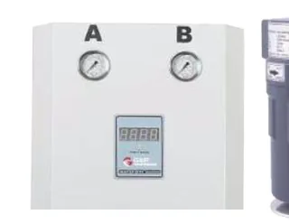

Alüminyum Gövdeli Kimyasal Hava Kurutucuları - GPDK 1800/2600/3700
GPDK- Sağlam ve dayanıklı alüminyum gövde
- Geniş kurutma alanı
- Güçlü hava akımı
- Ayarlanabilir fan hızı ve ısı ayarı
- Patlama emniyetli tasarım
- Kullanımı kolay kontrol paneli
| Bağlantı | 1" |
|---|---|
| Kapasite | 1800 / 2600 / 3700 Lt/dk |
| Voltaj | 220 V/1 PH/50 Hz |
| Basınç | 16 Bar |
| Ölçüler | 394x388x784 mm (1800 model) |
| Ağırlık | 35 kg (1800 model) |